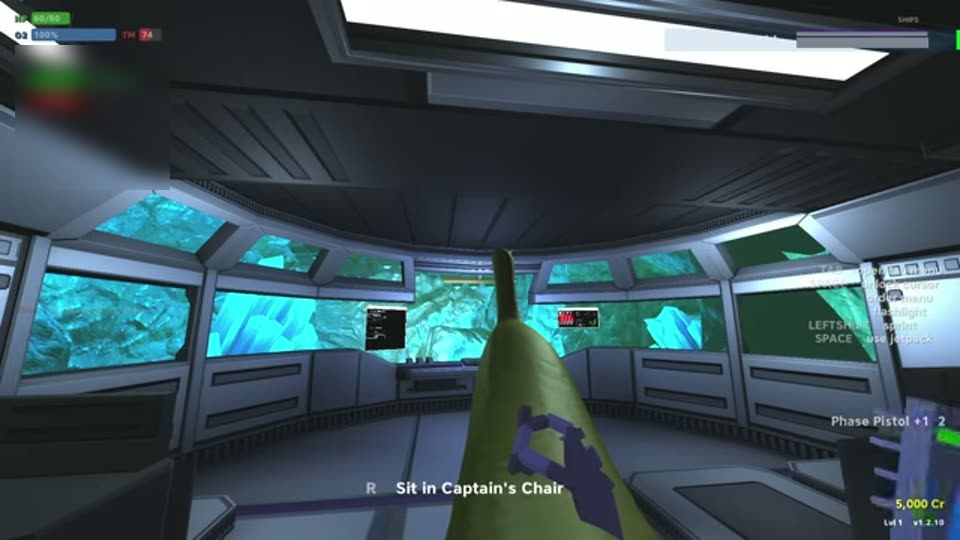
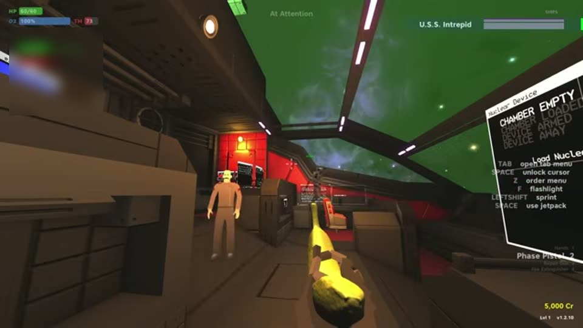
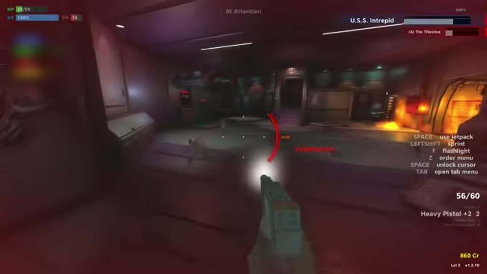
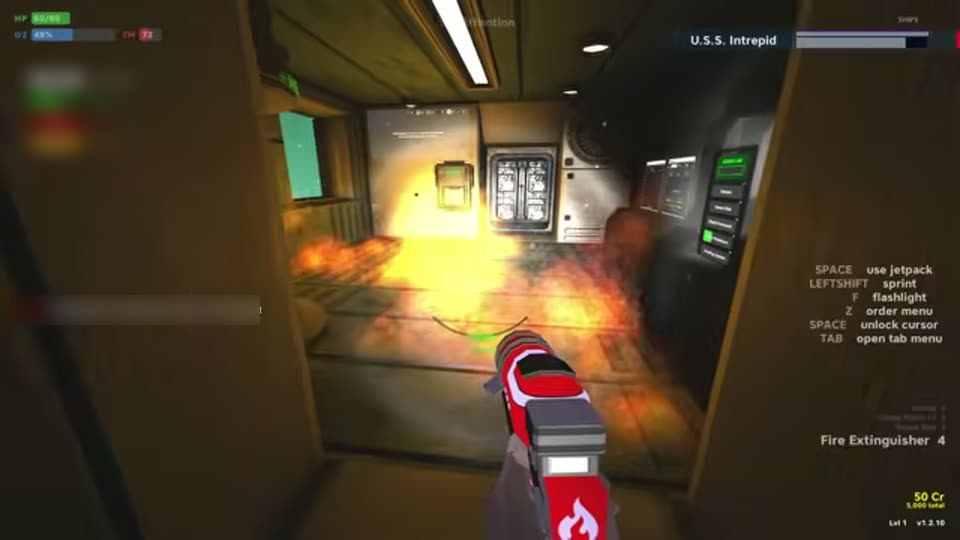
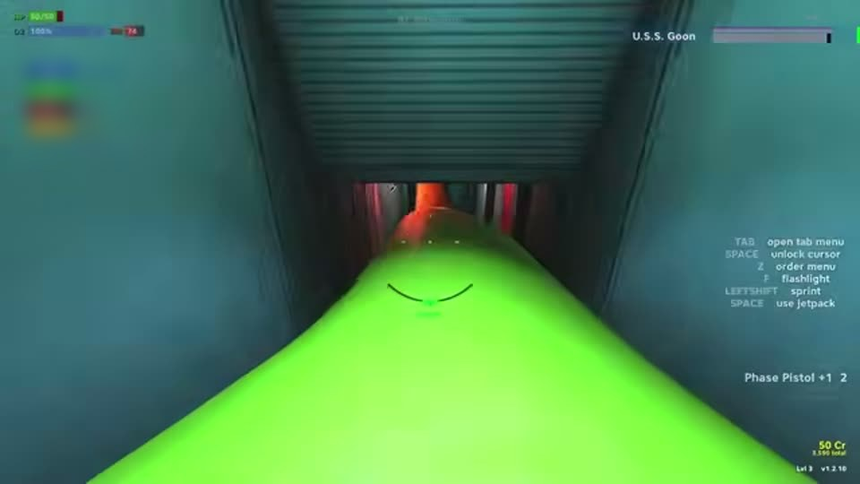

PULSAR: Lost Colony review: a starship crew and my giant banana gun

I started PULSAR: Lost Colony by taking a mission without reading it, and I spent the rest of the video making my gun bigger. The game is a co-op space sim from Leafy Games, out on Steam since June 22, 2021, for one to five players. Each player takes a role on the ship, from Captain to Engineer, while you look for the Lost Colony. I played with two friends, and AI crew bots filled the empty seats.
My mod swapped my Phase Pistol for a banana. It only exists on my screen, so when I showed it off on the bridge my friend could not see it. I held it like a pistol and explained: "First off, that's exactly how you're supposed to hold a banana. Just watch what the monkeys do."

Flying went sideways even without bananas. I took the ship to a station, teleported in and signed up for a surveyor job: "I didn't read about what the mission is, but we're doing it." In one fight I left the helm and teleported onto the burning enemy ship. My crew blew it up while I was still on board, and I died in the explosion.

Then I was captain. I shut off the auxiliary reactor, lights included, and a friend turned everything back on. I reconnected with a bigger banana, before an enemy Colonial Union ship blew us up. In a new session the lights and oxygen were off, and the crew suffocated while fires spread through the reactor room until I burned to death.

On the planets the banana kept growing. I walked into a facility on a volcanic world with a giant banana gun and was killed by enemies carrying giant bananas, since my mod swapped their weapons as well. On a toxic mushroom planet I died in acid, then found the alien ruins and decided I had broken the mechanism. "I'm sorry, but I think I pushed the button too many times, and it broke." Back on the ship, I ended the video by asking everyone to draw their weapons so three giant bananas filled the hallway.

It is great co-op chaos for a crew that enjoys disasters more than reading objectives. One session started with the lights and the oxygen already off, and fires spread through the reactor room. Store page: PULSAR: Lost Colony on Steam
More games I broke with mods: the Jump Space spaceship run, the Helldivers 2 rat run and the Mayhem a la Carte rat army.